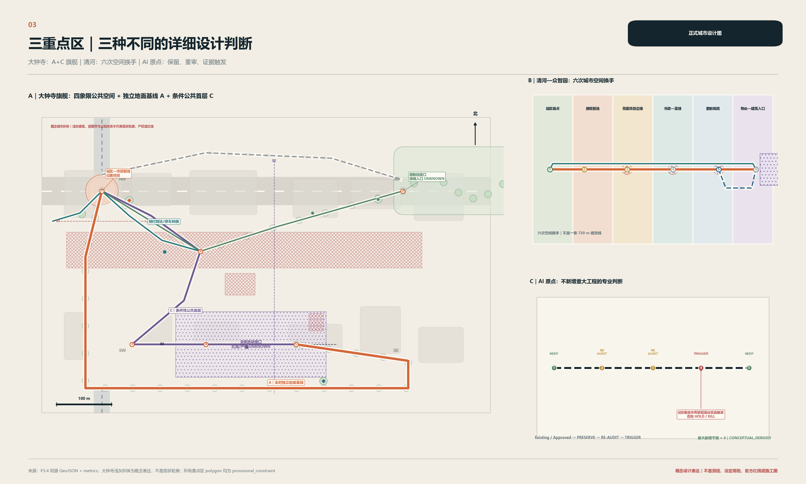

大钟寺 / 空间旗舰
A 全时地面公共基线 + C 条件性公共首层；B 继续 HOLD。六个接口、三个剖面与故障替代线把空间回答画清楚。
城市以项目为单位建设，人却以完整 Journey 为单位生活。项目完成，不等于旅程完成。
URBAN DESIGN FIRSTPROVISIONAL GEOMETRYFIELD = UNKNOWN大钟寺刻意成为最深的物质空间设计；清河是接收链设计；AI 原点是保留与重审设计。

A 全时地面公共基线 + C 条件性公共首层；B 继续 HOLD。六个接口、三个剖面与故障替代线把空间回答画清楚。
官方证据推翻站内东西通行缺失假设。设计从站区工程端点之后审核六次空间换手。
保留已有/已批工程，建成后重审；只有真实剩余 Journey 失败被证明，才触发可撤回的最小补丁。
紧凑链接既有空间证据，不新增设计图层。
下列比例从 provisional 场地多边形与概念包络派生，语义为 CONCEPTUAL_DERIVED；不是现状绿地/公共空间率、法定指标或改善承诺。
跨项目完整旅程审计器只做证据读取、接口识别、方案比较、故障测试与复核，不替代城市设计，也不要求居民使用 AI。
版权与证据说明：正文、概念 GeoJSON、程序化图件及离线 HTML 由参赛者/Codex 辅助生成；人视图是 PRESENTATION_ONLY 的 AI 概念图，不是现场照片或批准效果图。OSM 仅在一张图中作为已署名方向背景，不支撑边界或工程结论。页面不加载 CDN、远程字体/脚本/瓦片、API、iframe 或表单。